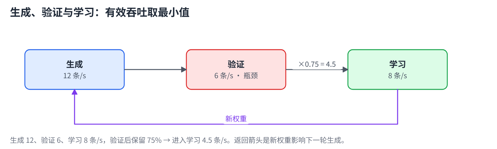
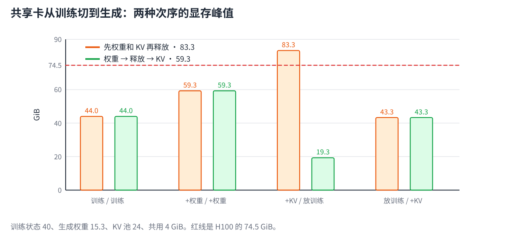
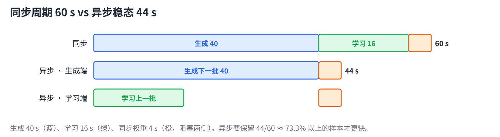
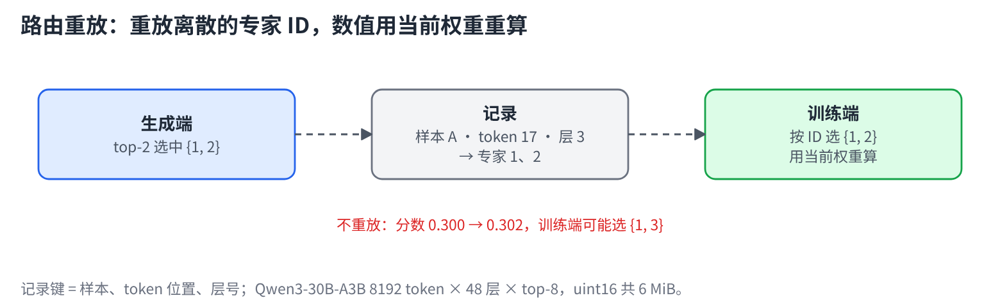
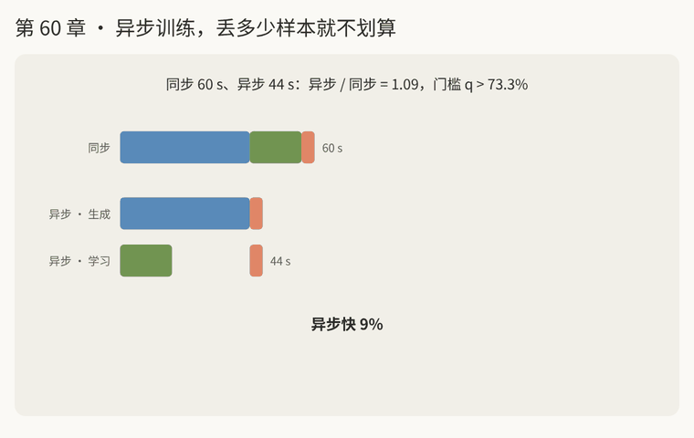

第 60 章 · 强化学习训练系统：生成、验证、学习组成的反馈循环
本地运行
git clone https://github.com/wikieden/ai-infra-from-constraints
cd ai-infra-from-constraints/code/notebooks
pip install jupyterlab torch numpy
jupyter lab ch60_rl_system.ipynb也可以下载后直接用 VS Code 打开 .ipynb 运行。需要 GPU 的章节在 Colab 里选「代码执行程序 → 更改运行时类型 → GPU」。
本章回答：RL 和固定数据的 SFT 在系统上差在哪？为什么做完了前向、反向和优化器，参数却可能没往对的方向走？生成 12、验证 6、学习 8 条/s，该先给谁加资源？同一组卡在训练和生成之间切换，先加载什么才不爆显存？异步训练为什么只有在保留 73% 以上样本时才划算？推理端和训练端算出的 logprob 不一样会怎样？MoE 为什么要把专家路由"重放"一遍？
讲解日期：2026-11-24 · 上一章：第 59 章 数据输入、checkpoint 与故障恢复 · 下一章：第 61 章 从系统方案到期限与硬件选择
对应原文：materials/ai-infra-book/manuscripts/10-训练系统.md§10.5 L627–L763（图 10-37 至 10-44）
本章缩写：RL = Reinforcement Learning（强化 / 学习）· SFT = Supervised Fine-Tuning（监督 / 微调）· OPD = On-Policy Distillation（同策略 / 蒸馏）· PPO = Proximal Policy Optimization（近端 / 策略 / 优化）· KL = Kullback–Leibler divergence（KL 散度）· R3 = Rollout Routing Replay（生成 / 路由 / 重放）· ULP = Unit in the Last Place（最后一位的单位）。全部缩写见 缩写与术语表
讲解
第一步：一轮反馈循环（2026-11-24）
类比：学生自己做题、老师批改、学生改正。 题目是学生自己写的答案，不是课本例题；改完以后，下次写出来的答案也跟着变。
原文 L631–L645：四条提示词每题两条回答得八条轨迹 → 奖励 → 优势（比基准好多少）→ 训练端按有效 token 构造损失、更新一次 → 新权重交给生成端。
- SFT 在真实前缀上预测下一个 token（教师强制），部署时却用自己的前缀，错了就进入训练很少覆盖的上下文。
- OPD 让学生自己生成，教师按学生实际的前缀给逐 token 分布；DeepSeek V4 用多教师 OPD 合并领域专家。代价是在线生成、教师前向和权重同步。
- 离线 / 在线说数据是否预先固定；on-policy 还要求采样分布和被优化的策略一致。
- 优势可能全为零：同组两条回答奖励都是 1，减去组内均值都是 0；奖励 1、0 才得到 ±0.5。verl + vLLM 小实验里，精确匹配奖励让同组奖励相同、策略梯度为零，参数只因 AdamW 的权重衰减而变。所以吞吐要数"实际用于训练的轨迹 / token"，能力要用固定评估检验。
一句话：RL 的数据是模型自己产生的；跑完了一步不代表学到了东西。
第二步：三道工序，先扩最慢的（2026-11-24）
类比：洗车、检查、打蜡三道工序。 检查员只有一个，洗车工加再多，打蜡那边也等不到更多车。
原文 L647–L661：生成 \(r_g\)、验证 \(r_v\)、学习 \(r_l\)，验证后符合版本要求的比例 \(q\)：
| 情况 | 有效样本/s |
|---|---|
| 生成 12、验证 6、学习 8，保留 75% | 4.5 |
| 生成翻倍到 24 | 4.5（验证还是瓶颈） |
| 验证翻倍到 12 | 8（学习成瓶颈） |

图 60-1 · 新资源给当前最慢的那段；它加速以后，再看瓶颈转到了哪。
一句话：有效吞吐取最小值，加资源先加瓶颈。
第三步：共享卡切换的次序，独立部署的权重同步（2026-11-24）
类比：小房间换布置。 先把新家具全搬进来再搬走旧的，中间会挤爆；先搬大件、再清旧的、最后摆小件，就放得下。
原文 L663–L685：H100 80 GB ≈ 74.5 GiB。训练状态 40 GiB，生成需要 15.3 GiB 权重 + 24 GiB KV 池，共用开销 4 GiB。各自独占时 44 和 43.3 GiB 都放得下。
| 切换次序 | 峰值 |
|---|---|
| 先加载生成权重和 KV，再释放训练状态 | 40 + 15.3 + 24 + 4 ≈ 83.3 GiB（超） |
| 先加载权重 → 释放训练状态 → 再分配 KV | 40 + 15.3 + 4 ≈ 59.3 GiB |

图 60-2 · 最终状态相同，峰值差 24 GiB，正好一份 KV 池。
- 独立部署：两组卡各自跑，但要发权重。Qwen3-235B-A22B 专家 423 GiB、EP16：给 16 个接收方各发整份共 6768 GiB；按各自分片发只要 423 GiB（每方 26.4 GiB）。
- 固定的参考模型可以放进第 23 章的固定权重加速器；持续更新的策略模型用可写存储，发布新版本给生成端。
场景代码：vLLM 的 sleep mode 正是为 RL 共享卡设计的切换接口（真实 API）：
llm = LLM(model="Qwen/Qwen3-8B", enable_sleep_mode=True)
outputs = llm.generate(prompts, params) # 生成阶段
llm.sleep(level=2) # 丢掉权重和 KV，把显存让给训练
train_step(policy, outputs) # 训练阶段
llm.wake_up(tags=["weights"]) # 先只恢复权重
load_new_weights(llm, policy) # 同步新权重
llm.wake_up(tags=["kv_cache"]) # 训练状态释放后再分配 KV
一句话：共享卡看张量生命周期，独立部署看发多少字节。
第四步：策略版本与异步的门槛（2026-11-24）
类比：按旧版说明书装的零件。 新版说明书出来了，旧零件有的还能用、有的得扔；扔得太多，提前开工就不划算。
原文 L687–L739：行为分布 \(\mu\)（实际采样）、本轮起点 \(\pi_{\mathrm{old}}\)、当前 \(\pi_\theta\)：
第一项是本轮优化，第二项是采样与起点的差异（版本滞后、采样配置、跨引擎计算差异）。
- logprob 本该 −3，误用重算值 −3.25：比值 \(e^{0.25} \approx 1.28\)，参数没变，样本权重多了 28%。要保留行为策略记录的概率。
- 即使同步了权重，第二项也不一定是 1：生成端逐 token decode 读 KV，训练端整段并行重算；注意力实现、归约次序、batch 形状、精度都可能让 logprob 不同（第 26 章：不同分段数平方和差 166 ULP）。长轨迹的序列概率比还会把各位置的差相加。
- 温度、top-k、top-p 改了分布，要存变换后的概率和采样配置。
例：生成 40 s、学习 16 s、同步 4 s。同步周期 60 s；生成和学习在独立资源上重叠，异步周期 \(\max(40, 16) + 4 = 44\) s。保留比例 \(q\) 时：
\(q = 0.8\) 时提高约 9%，\(q = 0.7\) 时反而少约 5%。

图 60-3 · 异步省掉的是两端轮流等待；生成得早，样本也更可能用旧权重。
- 长轨迹更容易跨过更新或遇到中断：完整生成的概率 \(e^{-\lambda t}\)。逐 token 记录进度和策略版本，恢复后接着生成同一条，减少长度偏移。
- DeepSeek V4.1 把部署时的稀疏访问、FP4 主 KV、SWA 重放都放进训练里模拟，让训练和部署走同一条路径。
一句话：异步省等待，丢样本扣收益；保留比例要高过周期之比。
第五步：MoE 的路由重放（2026-11-24）
类比：岔路口的抛硬币。 数值差一点点，可能就走了另一条路，后面全不一样；把当时走的路记下来，训练时照着走。
原文 L741–L762：top-2，分数 0.500、0.301、0.300 选专家 1、2；第三个因计算次序变 0.302，就改成 1、3。
路由重放：记录生成时每个样本、token 位置、层号选中的专家 ID，训练时按 ID 选专家，再用当前权重算路由分数、专家输出和梯度。
记录要跟着 token 走：打包改位置、上下文切分改所在卡、重计算再读一次。NVIDIA 的 R3 报告四组对照：开启后 logprob 误差中位数都降，每步耗时略长，训练奖励没有一致提高——三项分开看。

图 60-4 · 虚线是 ID 重放，实线是当前计算的数据流。
一句话：重放离散选择、重算连续数值，让两端走同一条路。
动画演示：同步与异步，丢多少样本才不划算

可交互版：animations/60-rl-system.html（滑块：生成 10–80 s；学习 5–60 s；同步 0–20 s；保留比例 0.5–1.0）。
怎么看：
- 上面一行是同步周期（生成 → 学习 → 同步），下面一行是异步稳态（生成与学习并行，再同步）（第四步）；
- 右边是两者的有效吞吐之比和保留比例门槛；
- 播放：40 / 16 / 4、q = 0.8（快 9%）→ q = 0.7（慢 5%）→ 学习也是 40 s（门槛降到 0.52）→ 同步 0。
练习与作答记录
题 1（第二步）：生成 20、验证 15、学习 10 条/s，保留 90%。有效吞吐多少？下一份资源加给谁？
作答记录：（待作答）
题 2（第三步）：一张 96 GB 卡（约 89.4 GiB），训练状态 50 GiB、生成权重 30 GiB、KV 20 GiB、共用 5 GiB。两种切换次序各自峰值多少？哪种可行？
作答记录：（待作答）
题 3（第四步）：生成 30 s、学习 30 s、同步 5 s。异步周期多少？保留比例至少多少才值得？
作答记录：（待作答）
口诀
学生自己做题老师批，做完一遍不等于学会；
三道工序看最慢的，加人先加检查员；
小房间换布置，先搬大件、再清旧的、最后摆小件；
旧说明书的零件扔太多，提前开工就亏；
岔路口记下当时走哪条，训练照着走。
本章复习卡片
I201（RL 反馈循环；SFT vs OPD；同组奖励相同优势为零；r_eff = min(r_l, q·min(r_g, r_v))：4.5 → 8）、I202（共享卡切换 83.3 vs 59.3 GiB；EP16 按分片发 423 vs 6768 GiB）、I203（π_θ/μ 两项分解、logprob 误记 1.28；异步门槛 44/60 = 73.3%；路由重放 6 MiB）。练习做完后，按答错、卡住的地方再补。
附录 · 延伸阅读
留给以后深入学习用，不影响本章主线。★ 是建议先读的。
推荐阅读
| 读什么 | 读哪里 | 读它为了什么 |
|---|---|---|
| ★ AII 第 10 章 | §10.5 L627–L763 | 本章原文 |
| verl（HybridFlow，EuroSys 2025） | 共置与切换 | RL 训练框架 |
| vLLM 文档 | Sleep Mode | 共享卡切换接口 |
| 强化学习讲义 | 策略梯度、PPO | 补基础 |
| 第 17 章 训练与强化学习的计算和状态 | RL 筛得越严生成越多 | 前置 |
数学原理
- 重要性采样：\(\pi_\theta/\mu\) 修正采样分布；采样没覆盖到的事件补不回来，分布差太大时权重方差大。
- 概率比链式分解：一个比值拆成"优化带来的"和"采样与计算差异带来的"。
- 生存概率：中断率 \(\lambda\) 下长 \(t\) 的轨迹完整生成概率 \(e^{-\lambda t}\)。
公式清单
| 公式 | 意思 |
|---|---|
| \(r_{\mathrm{eff}} = \min(r_l, q\min(r_g, r_v))\) | 三阶段有效吞吐 |
| \(\pi_\theta/\mu = (\pi_\theta/\pi_{\mathrm{old}})(\pi_{\mathrm{old}}/\mu)\) | 概率比分解 |
| \(q > T_{\mathrm{async}}/T_{\mathrm{sync}}\) | 异步划算的门槛 |
| tokens × 层 × k × 2 B | 路由重放记录 |
代码对照：把本章的数字用代码算一遍
代码
ai-infra/solutions/chapter-code/ch60_rl_system.py，测试tests/test_ch60.py：
bash cd ai-infra/solutions/chapter-code uv run python ch60_rl_system.py uv run pytest tests/test_ch60.py
| 讲义 | 写法 | 跑出来 |
|---|---|---|
| 第一步 | advantages([1, 0]) |
[0.5, −0.5] |
| 第二步 | effective_rate(12, 6, 8, 0.75) |
4.5；验证翻倍 8 |
| 第三步 | switch_peak(...) |
83.3 / 59.3 GiB |
| 第四步 | ratio(-3, -3.25)、async_gain(q) |
1.28；1.09 / 0.95 倍 |
| 第五步 | top2(...)、replay_bytes() |
[0, 2]；6 MiB |
代码里才看得到的 3 件事：
async_gain等于 \(q \cdot 60/44\)，所以门槛就是 \(44/60\)，与 batch 大小无关。top2用的是 0 起编号，[0, 2] 对应原文的"专家 1、3"。survive里中断率按每小时 0.1 次是演示值，原文没给具体数。
自己改一改（不影响练习答案）：
- 给
effective_rate加第四道工序（教师前向），看 OPD 的瓶颈。 - 写一个函数：给定 KV 池大小，求切换峰值不超过容量的最大训练状态。
- 用
survive算：要让 90% 的轨迹不被中断，轨迹最长能多久。